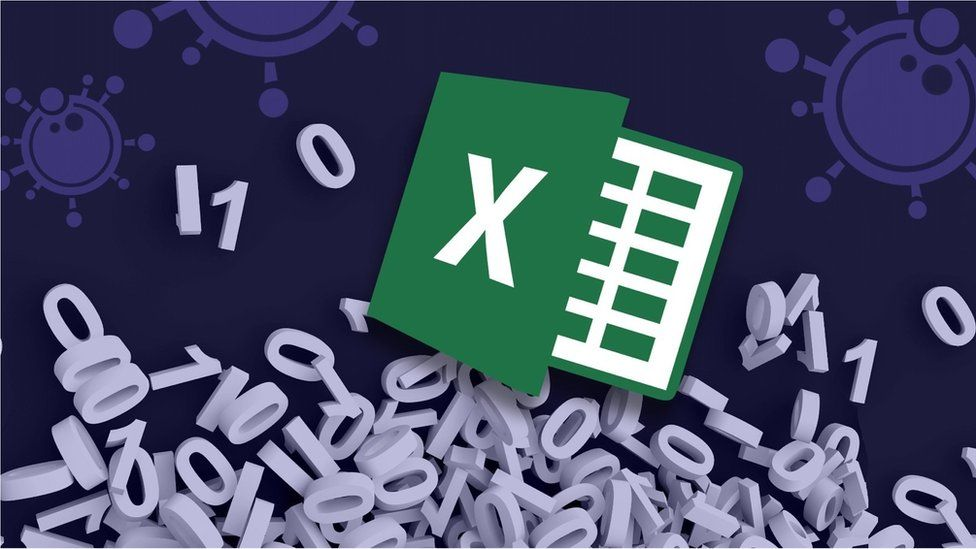

Tech
Excel: Why using Microsoft's tool caused Covid-19 results to be lost
By Leo Kelion
Technology desk editor

The badly thought-out use of Microsoft's Excel software was the reason
nearly 16,000 coronavirus cases went unreported in England.
And it appears that Public Health England (PHE) was to blame, rather than a
third-party contractor.
The issue was caused by the way the agency brought together logs produced
by commercial firms paid to analyse swab tests of the public, to discover who
has the virus.
They filed their results in the form of text-based lists -
known as CSV files - without issue.
PHE had set up an automatic process to pull this data together into Excel
templates so that it could then be uploaded to a central system and made
available to the NHS Test and Trace team, as well as other government
computer dashboards.
The problem is that PHE's own developers picked an old file format to do this -
known as XLS.
As a consequence, each template could handle only about 65,000 rows of data
rather than the one million-plus rows that Excel is actually capable of.
And since each test result created several rows of data, in practice it meant
that each template was limited to about 1,400 cases.
When that total was reached, further cases were simply left off.
For a bit of context, Excel's XLS file format dates back to 1987. It was
superseded by XLSX in 2007. Had this been used, it would have handled 16
times the number of cases.
At the very least, that would have prevented the error from happening until
testing levels were significantly higher than they are today,
But one expert suggested that even a high-school computing student would
know that better alternatives exist.
"Excel was always meant for people mucking around with a bunch of data for
their small company to see what it looked like," commented Prof Jon
Crowcroft from the University of Cambridge.
"And then when you need to do something more serious, you build something
bespoke that works - there's dozens of other things you could do.
"But you wouldn't use XLS. Nobody would start with that."
Speaking in the House of Commons, the Health Secretary Matt Hancock
suggested that the problem had emerged as a result of PHE using a "legacy
system" and a decision had been taken two months ago to replace it.
Presumably, however, this specific problem had not been spotted. Otherwise
PHE would have realised that the flaw would come into effect before
the upgrade was complete.
Mr Hancock was challenged to put other relevant data-process diagrams into
the public domain, so other hidden failings in the government's digital
apparatus could be found.
But while the minister said he would see what was possible, he added: "The
challenge of a maximum file size error is that it wouldn't necessarily appear on
those sorts of flowcharts."
PHE is confident that test results were not missed until last week, because of
the flaw.
And in its defence, the agency would note that it caught most of the cases
within a day or two of the records slipping through its net.
But Labour's shadow health secretary Jonathan Ashworth said lives had still
been put at risk because the contact-tracing process had been delayed.
"Thousands of people [were] blissfully unaware they've been exposed to Covid,
potentially spreading this deadly virus at a time when hospital admissions are
increasing," he told the House of Commons.
This isn't just a shambles. It's so much worse."
To handle the problem, PHE is now breaking down the test result data into
smaller batches to create a larger number of Excel templates. That should
ensure none hit their cap.
But insiders acknowledge that the current clunky system needs to be replaced
by something more advanced that excludes Excel, as soon as possible.
More about coronavirus
- SOCIAL DISTANCING: How have rules on meeting friends changed?
- SUPPORT BUBBLES: What are they and who can be in yours?
- FACE MASKS: When do I need to wear one?
- TESTING: How di I get a virus test?
- SYMPTOMS: What are they and how to guard against them?